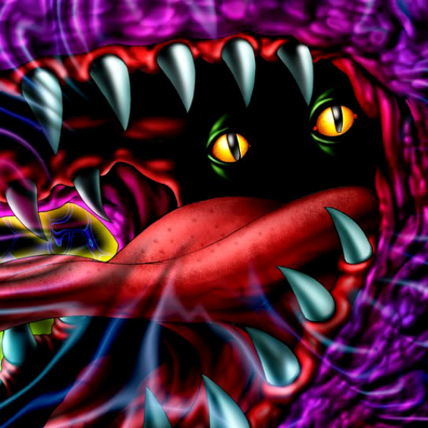

Jowls of Dark Demise

Description: "When this parasite card is flipped face-up in battle, it takes control of the opposing card. When the controlled monster is destroyed in battle, this card is revived in the controlling player's Summoning Area, other than its current location. The nature effect and destruction features of the monster that's taken over are rendered ineffective. Transforms adjacent spaces into CRUSH terrain when this card is destroyed in battle."
STATS
ATK: 200
DEF: 100DECK COST
Deck Cost per Card: 8EFFECT NOT IMPLEMENTED